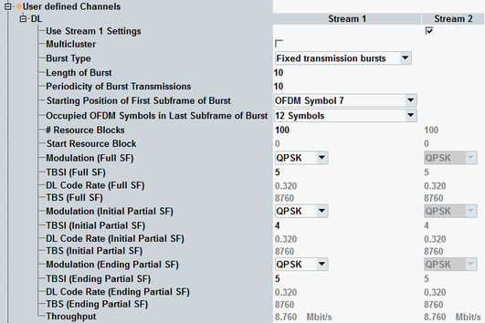

The parameters in this section configure user-defined channels for LAA, with a fixed burst configuration. Options R&S CMW-KS510 and -KS514 are required.
To display these settings, enable LAA and select the scheduling type "User-Defined Channels", see "Frame Structure" and "Scheduling Type".
To configure the channels, proceed in the following order:
Set the burst type to "Fixed transmission bursts".
If you want to use multi-cluster, enable it.
Configure the burst length.
Configure the first subframe (starting position) and the last subframe (OFDM symbols).
Select the modulation types.
Configure the remaining settings in any order.
For valid parameter combinations and background information, see "Fixed transmission bursts".
You can configure the settings per SCC with LAA.

Multi-cluster allocation is only possible for resource allocation type 0 (resource block groups). Option R&S CMW-KS512 is required.
To use DL multi-cluster allocation, enable the checkbox. The button "RB Clusters" is displayed. Press the button to open the following configuration window.

In this dialog box, you can enable or disable each individual RBG via the checkboxes.
Remote command:This section describes "Fixed transmission bursts".
See also "User-Defined Ch. for LAA, Random Bursts".
Remote command:Number of subframes per burst.
Remote command:Periodicity n for subsequent bursts (a burst starts every nth subframe). The minimum value equals the burst length.
Example: Burst length = 3, Periodicity = 4 results in the sequence: (3 SF burst) (1 SF muting) (3 SF burst) and so on.
Remote command:Enables or disables partial allocation for the first subframe of the burst.
"OFDM Symbol 0" | Full allocation, both slots allocated (OFDM symbol 0 to 13) |
"OFDM Symbol 7" | Partial allocation, second slot allocated (OFDM symbol 7 to 13) Only allowed for burst length > 1. |
Number of allocated OFDM symbols at the beginning of the last subframe of the burst.
For burst length = 1, full allocation is mandatory (14 symbols).
Remote command:- "# Resource Blocks" selects the number of allocated resource blocks.
"Start Resource Block" specifies the number of the first allocated resource block.
For DL multi-cluster allocation, see "Multicluster". - "Modulation (...)" selects the modulation type and influences the allowed TBSI values. 256-QAM requires option R&S CMW-KS504/-KS554.
"TBSI (...)" selects the TBS index. The resulting transport block size "TBS (...)" in bits is displayed.The settings are configurable for:– Subframes with full allocation "(Full SF)" – First subframes with partial allocation "(Initial Partial SF)" – Last subframes with partial allocation "(Ending Partial SF)"
The settings for partial allocation are only displayed if you have configured partial allocation.
Remote command:Effective channel code rate, i.e. the number of information bits (including CRC bits) divided by the number of physical channel bits on PDSCH.
The information is displayed for all used subframe types (full allocation, first SF partial allocation, last SF partial allocation).
Remote command:Displays the expected average maximum throughput in Mbit/s. The value is calculated per downlink stream.
Remote command: